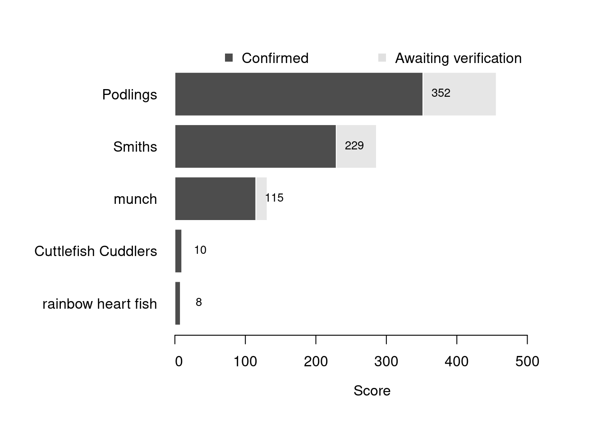

Content
You can view all the wildlife recorded at this event on iNaturalist.


| Records | 135 |
| Species | 47 |
| Verified species | 38 |
| Observers | 11 |
| Potential score | 814 |
| Confirmed score | 562 |
| Top verified species | Acanthocardia paucicostata |
| Top species rarity score | 69 |
| Registered participants | 21 |
| Children attending | 7 |
Congratulations to Podlings for taking the gold medal in this BioBlitz Battle! And well done to everyone for a great game and some fantastic wildlife finds.
| Team | Records | Potential Score | Confirmed Score |
|---|---|---|---|
| Podlings | 54 | 456 | 352 |
| Smiths | 31 | 286 | 229 |
| munch | 12 | 131 | 115 |
| Cuttlefish Cuddlers | 1 | 10 | 10 |
| rainbow heart fish | 1 | 8 | 8 |

| Participant | Records | Potential Score | Confirmed Score |
|---|---|---|---|
| jerrypt | 21 | 333 | 279 |
| Maria Smith | 31 | 286 | 229 |
| Ben | 22 | 185 | 162 |
| One World | 11 | 180 | 137 |
| T | 12 | 131 | 115 |
| Ian Creasey | 1 | 10 | 10 |
| stephb123 | 1 | 8 | 8 |
A total of 6 species have a verified rarity score of 23 or higher.


Community verified records only
Click any image to view the taxon on iNaturalist.
| Name | Rarity Score | |
|---|---|---|

|
poorly-ribbed cockle - Acanthocardia paucicostata | 69 |

|
Northern Quahog - Mercenaria mercenaria | 40 |

|
White Piddock - Barnea candida | 26 |

|
Common piddock - Pholas dactylus | 26 |

|
Devil’s Tongue Weed - Grateloupia turuturu | 25 |

|
Manila Clam - Ruditapes philippinarum | 23 |

|
Jingle Shells - Anomiidae | 21 |

|
Brown Shrimp - Crangon crangon | 20 |

|
Blow Lugworm - Arenicola marina | 15 |

|
Variegated Scallop - Mimachlamys varia | 15 |

|
European Sting Winkle - Ocenebra erinaceus | 15 |

|
Pullet Carpet Shell - Venerupis corrugata | 15 |

|
Sand Mason Worm - Lanice conchilega | 14 |

|
Keeled Tubeworm - Spirobranchus triqueter | 14 |

|
Netted Dogwhelk - Tritia reticulata | 13 |

|
Dahlia Anemone - Urticina felina | 13 |

|
Common Atlantic Slippersnail - Crepidula fornicata | 11 |

|
Pacific Oyster - Magallana gigas | 11 |

|
Native oyster - Ostrea edulis | 11 |

|
Grey Topshell - Steromphala cineraria | 11 |

|
Irish Moss - Chondrus crispus | 10 |

|
Grey Mail-shell - Lepidochitona cinerea | 10 |

|
Broadleaf Sea Lettuce - Ulva lactuca | 10 |

|
Common Cockle - Cerastoderma edule | 9 |

|
Spiral Wrack - Fucus spiralis | 9 |

|
Glass Shrimps - Palaemon | 9 |

|
Purple Topshell - Steromphala umbilicalis | 9 |

|
Gutweed - Ulva intestinalis | 9 |

|
Atlantic Beadlet Anemone - Actinia equina | 8 |

|
snakelocks anemone - Anemonia viridis | 8 |

|
Common Whelk - Buccinum undatum | 8 |

|
Barnacles - Cirripedia | 8 |

|
Saw Wrack - Fucus serratus | 8 |

|
Shanny - Lipophrys pholis | 8 |

|
Common Periwinkle - Littorina littorea | 8 |

|
Grasshoppers, Crickets, and Katydids - Orthoptera | 8 |

|
Common European Limpet - Patella vulgata | 8 |

|
European Green Crab - Carcinus maenas | 7 |